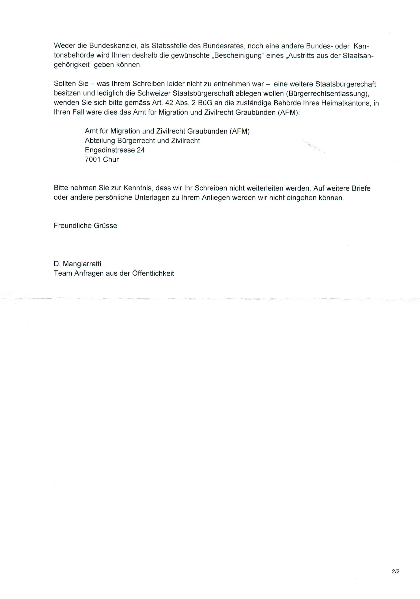

|
|

|
 |

|
Nachdem ich mich also vor Ort so 'unkooperativ' wie nur
möglich verhalten habe - denn was soll man auch anders tun, denn
mit Kooperation geht mal sicher gar nichts - bekommt man sowieso
keine Reaktionen - vielmehr musste ich diese Chance am Schopfe
packen auf's Ganze zu gehen - in der Hoffnung die haben die
Schnaue voll von mir und lassen mich endlich in Ruhe -
offiziell.
Stattdessen kam die KESB-Graubünden (Kindes- und
Erwachsenenschutzbehörde Graubünden) in Form von der "Doris
Konrad Ferroni" und dem "Peter Vincenz" zu
folgendem Beurteilungen bezüglich dem 'Marco Candrian' - siehe
Bild unten.
Erstaunlich, da ich weder den Peter Vincenz,
noch die Doris Konrad Ferroni jemals persönlich
gesehen oder gesprochen habe (nicht dass ich es wüsste) - konnten
die mich beurteilen.
Ich habe gesagt sie wollen beweisen, dass ich (der Mensch) die
'Person' 'Marco Candrian' bin, dann wuerde ich kommen.
Konnten die offenbar nicht.
Also wollten die in meine Wohung kommen, was die aber
wiederriefen, nachdem ich angekuendigt habe, dass ich das ganze
mit Video aufnehmen werde. (mit dem Hinweis, wenn sie ihr Gesicht
nicht zeigen wollen, koennen sie ja eine Maske tragen - denn mir
ging es ausschlischlich um die Argumentationen. [Email].
Ausserdem haetten die mich ja mit der Polizei eintrudeln lassen
könnne schlussendlich - immer noch besser als die Glaskugel
einzusetzen und Schrott zu produzieren? Wie auch immer...
Wir haben hier Experten, welche offensichtlich fast quasi via
einer Glaskugel umfangreiche Beurteilung über den 'Marco
Candrian' fällen konnten, ohne dass die 'mich' erkennen würden,
liefe 'ich' vor deren Nase herum.
Also alles was die hatten, waren die Aussagen vom Sozi, welche
rein gar nichts wissen ueber mich. Z.B. es kommen da immer die
gleichen Pauschal-Fragen: Wie gehts? 'gut und ihnen". Was machen
sie so? "Ich fahre Velo". Haben sie Kollegen? "nein". Und schon
ist man wieder draussen. Diskutieren kann man mit diesen Doedels
auch nicht - mit Aushame von einem der nicht mehr dort arbeitet -
wo ich hoechsten Respekt haben MUSS, weil er das verdient (hat).
Die Ausnahme welche die Regel bestaetigt meinte ich.
Plus ich war seit mehr als einem Jahr oder so nicht auf dem
Sozi etc. Also wie können die was wissen - da ich denen eh immer
den gleichen Muell gesagt habe bei den immer gleichen Fragen? Und
doch war das eine wichtige Quelle fuer den Peter und die
Doris.
Dann haben die noch mein eventuell chaotisches Gekripsel (Briefe,
Email) - was mitunter extra so gehalten wurde, dass die das nicht
verstehen koennen - respektive nur noch den Kopf schuetteln
koennen. Ich nehme mir diese Freiheit :)
Eine kleine Anekdote: Ich hatte den Herrn Falkner als
"Deutsch-Lehrer" (also Germanist). Dann kam ein neuer Lehrer. Wir
mussten einen Aufsatz schreiben. Habe ich gemacht und dieser
Aufsatz kam zurueck mit 'keiner Note'. Stattdessen ging der Neue
zum Herrn Falkner und fragte was das soll.
Man kann mir vorwerfen, dass ich offensichlich quasi 'nicht
schreiben' kann - oder halt unverstaendlich - oder wie auch
immer. Aber eine Beurteilung ueber mich zu machen, mit meinem
Gektritzel als eines der Hauptargumente schlussendlich -...
naja.. gut genug fuer den Peter und die Doris offenbar.. das plus
das 'Nicht-Wissen' des Sozi und offenbar einer Glaskugel
wahrscheinlich.
Vielleicht ist diese Glas-Kugel ausser Funktion gewesen - mit der Doris und dem Peter hinein starrend, haben eigentlich nur deren Reflektion gesehen und danach geurteilt? Man weiss es nicht genau.
Wir haben hier also 'Experten', welche Familien Kinder
wegnehmen und sonst wo hinstecken.
Die konnten mich also beurteilen, ohne mich je persoenlich
getroffen zu haben.
Passt das zusammen - oder stimmt da was nicht?
Was ist wenn die aehnliche 'hellseherische' Urteile auch in
anderen Fällen fällen? Also das es zum personelichen Kontakt
kommt, ist schon anzunehmen, aber es zeigt doch das die imstande
sind miserable Quellen fuer wertvoll zu halten - mit
entsprechenden Miss-Interpretationen - und demnach katastrophalen
Entscheidungen, durch welche dann z.B. die Kinder und Familien zu
leiden haben. Und das Ganze wohl mit gegenseitigem
Schulterklopfen, als Gemeinschafts-"Leistung".
Nun, in den letzen 3 Tagen, musste ich 4 Leute auf
unterschiedlichsten Ebenen helfen - und zwar weil ich da die
Kompetenz habe. Ich bin irgendwie bekannt, dass ich so einige
Fertigkeiten mir angeeigent habe über die Jahre.
Programmieren in C, Python, PHP, mysql, javascript.
Spezialist in GNU/Linux (seit 20 Jahren) - aber auch
Windows
PC-Hardware Reparturen.
Eletronik und Elektro-Reparaturen (wenn auch mehr einfachere
Probleme)
Relativ umfangreiche und diverse handwerkliche
Fertigkeiten.
Mechaniker-Erfahrung - Motorrad aber vorallem Fahrrad :) Dann
noch Spezialist und Fertigkeiten, welche ich hier nicht sage.
So soll ich aber nicht imstande sein mit Geld umzugehen.
Komisch - ich habe zwar sehr wenig davon, und trotzdem habe ich
immer alles bezahlt etc. Noch nie eine Betreibung - nichts - ABER
laut der Doris und dem Peter kann ich mit Geld nicht
umgehen!
etc...
etc...
Dass ich quasi eine Zumutung fuer Behoerden bin, gebe ich ja zu.
Erstens muss ich es - um mit meinem Projekt weiter zu kommen -
und ausserdem fuehle ich denen gerne auf den Zahn. Ich fuehle
gerne Leuten mit 'Macht' auf den Zahn. Das kann ich auch ganz gut
wie ich meine.
Verzerrtes Selbstbild. Nun ich bin ein einfacher erstmals dummer Typ, der aber einige Fertigkeiten gelernt hat. Ausserdem habe ich eine Abneigung gegen die Demokratie oder ähnliche Machtstrukturen welche gegen (meiner Meinung nach) entgegen der Freiheit geht. Ich bin der Meinung dass Menschen untereinander sehr wohl gut zusammenleben könnnen - wenn dann auch jeder prinzipiell nur auf sein eigenes Eigentum und sich selber gucken 'darf'. Entgegen der öffentlichen Meinung, dass es eine übergeordnete Staats-Macht braucht, weil sonst würden sich die Menschen gegenseitig zerfleischen (aka verzerrtes Staatsbild).
Also wenn diese Menschen ein gemeinsames Eigentum haben, ein gemeinsames Projekt, sind Mehrheitsentscheidungen logisch und sinnvoll. Und ueber sein Eigentum kann man auch Regeln der Benutzung erlassen etc. Aber - die Grenze ist dort, wo der Mensch zum Eigentum von anderen Menschen wird - sprich wenn Menschen ueber andere Menschen grundsaetzlich bestimmen wollen (also z.B. in einern Demokratie - Herrschaft der Mehrheit quasi". Da wird eine Grenze uebersprugen welche ich persoenlich nicht unterstuetze - sondern komplett ablehne und nichts damit zu tun haben will.
Ach ja: Offensichtlich bin ich auch verzerrt irgendwie.. evt.
weil ich mich als 'Bruder Calmar', 'Calmar von Flims', und einen
Diplomatischen Ausweis (oder sonst eine Bestätigung) verlange..
tia was soll ich sonst machen? Ich will kein Mitglied dieser
"Schweizerischen Eidgenossenschaft" sein (ohne dass man Mitglied
einer anderen Mafia werden muss).
Nur ... 'Marco Candrian' kann ich mich nicht freiwillig nennen,
weil dann waere das juristisch offensichtlich ein Einverstaendnis
zum Gebrauch dieser Person und damit ein Konsens zur CH. (ich bin
zwar kein jurist, aber so verstehe ich das und scheint mir auch
Sinn zu machen).
"Kann keine beauftragte Person instruieren oder
überwachen": Ich nehme mal an, hätte ich Kinder, würde
die Doris und der Peter die mir fast schon wegnehmen? (und das
alles aufgrund von einem 'persönlichen Kentnisstand' von gegen
NULL.)
Auch erwaehnenswert, dass Leute zu mir kommen und von mir
instuiert werden WOLLEN in gewissen Sachen - komisch? Wobei die
kennen mich ja nur persoenlich - halt schon kein Vergleich zur
Glaskugel von der Doris und dem Peter.
Also: ab sofort kann ich ja quasi gar nichts mehr - auf wunderliche Weise - laut KESB und deren Glaskugel.
Insofern gebe ich schon zu, dass ich vom Staat ausgesehen mich dis-funktional verhalte (nicht dass ich nicht auch anders könnte .. nur .. was ist schon wieder mein Ziel? Und welche Strategien gibt es das zu erreichen? Hat man bessere Vorschlaege als das was ich mache? Dann bitte her damit z.B. an mac@calmar.ws - vielen vielen Dank!!).
Wie könnten diese KESB-Hellseher, oder alle anderen
Behörden-Fritzen etwas gegen den Staat haben, wo die doch nur
durch denselbigen einen Lohn/Job erhalten? So richtig freiwillig
würden normale Unternehmer/Leute diese Leute kaum einstellen
und/oder finanzieren - hätten die die Wahl.
Also muss ich es sein, der ein 'verzerrtes Staatsbild' hat. Und
zu diesem Schluss kommen diese quasi gott-spielenden sozialen
brown-nose 'Experten' - ohne mich je gesehen zu haben.

Anu: so weit so gut. jetzt halt Vormund und IV. Jetzt nimmt einem ja eh keine Behörde mehr Ernst. ABER im Umkehrschluss, kann ich jetzt gewissermassen eine 'Nicht-Mitglidschaft' zur 'Schweizerischen Eidgenossenschaft' geltend machen - da ich ja 'offenbar' eh nicht ganz auf der Platte bin laut der Doris und dem Peter - und demnach keine Rechtsgültigkeit habe - dafür ist ja mein Vormund jetzt da. Hm. - so gesehen.... mein Ziel doch irgendwo teilerreicht - zumindest in diesem Sinne - sehr positiv und gutwillig gedacht...

Doris Konrad Ferroni, lic. phil.
... woraus sich alles andere ableiten (auch mein Verhalten) lässt, ist der:
Aber das ist offenbar zuviel verlangt, vielmehr wird einfach davon ausgegangen. Das ist aber der springende Punkt. Ich weiss nicht wie doof/schlau diese Leute bei den Behörden sind, ob die das nicht verstehen wollen, oder können... aber aufjeden Fall wird dieser springende Punkt einfach übergangen.
Bin also ich, der Mensch genannt 'Calmar', ein gültiges Mitglied der 'Schweizerischen Eidgenossenschaft' - und wenn ja, wieso?
Wie der Teufel das Weihwasser fürchtet, scheinen sich die Behörden/die 'Schweizerische Eidgenossenschaft' vor einer schriftlichen Antwort/Erklärung zu dieser Frage zu fürchten. (Unglaublich? Aber offensichtlich wahr.)
Könnten die darlegen, dass ich eine von deren 'natuerlichen Personen' bin, wuerde ich alles akzeptieren - weil dann sämtliche 'Statuten' für mich gelten - richtig. Ich müsste und wuerde das akzeptieren.
Können die das aber nicht (oder machen die das nicht) - ist die Situation eben komplett anders. Dann bin ich nur ein Mensch. Und dass die Behörden keine Befugnis über Menschen haben - wissen die .. zumindest die Juristen sollten das wissen. In all den Dokumenten ist nie die Rede von 'Menschen' .. die wissen also schon was sie machen offenbar.
Und jetzt, weil ich dieses 'Fundament' in Frage stelle, natürlich mit enstprechendem Verhalten (weil man muss alles versuchen was möglich ist - sonst bekommt man eh keine Antworten - also muss man die triezen bis zum geht nicht mehr - damit es evt. irgendwie weitergeht mit dem Projekt), soll ich nicht ganz auf der Platte sein. Wobei das ist mir alles egal, ich will eine Antwort auf meine Frage erstmals. Solange ich keine bekomme gehe ich davon aus (wahrscheinlich zurecht) dass ich mit deren 'Person' nichts zu tun habe - und verhalte mich so, was dann halt noch viel unverstaendlicher ist fuer alle Schaefchen und Behoerden.
Die Frage wo sich stellt, inwieweit wissen diese Behörden was sie machen.. deren Ignoranz dieser Basis-Frage gegenüber. Sind die nicht imstande das zu begreifen/beantworten oder wollen die das gar nicht wirklich begreifen/beantworten/wahrnehmen?
What is PERSON?
A man considered according to the rank he holds in society (An association (The act of a number of persons who
unite or join together for some special purpose or business) or
company of persons (generally not Incorporated) united together
for any mutual or common purpose), with all the rights
to which the place he holds entitles him, and the duties which
it imposes. 1 Bouv. Inst. no. 137. A human being considered as
capable of having rights and of being charged with duties;
while a “thing” is the object over which rights may be
exercised.
Es geht also um eine 'Instanz' representiert von einem
'Menschen' in einer Gesellschaft - einer Organisation. Richtig.
Die Frage ist jetzt: ist man Mitglied dieser Gesellschaft -
oder eben nicht? Ist man nicht, ist man auch keine deren
Personen.
Wie kann man ordentliches Mitglied einer Gesellschat werden?
Lediglich durch einen Vertrag - ein Einverständnis dazugehöhren
zu wollen - das ganze auf freiwilliger Basis.
Oder man ist eben pro-Sklaverei, wo der 'Mensch' das
Eigentum von jemandem/einer Organisation sein kann -
offensichtlich der Fall bei der 'Schweizerischen
Eidgenossenschaft' - nota bene.
Macht die Mafia ziemlich gleich mit ihren
'Schutzgeld' Geschäften - via Zwangs-Einverstaendnis
quasi. Wüerde man die fragen wieso man Schutzgeld bezahlen
muss, wuerden die sagen man wird ja schliesslich auch
beschuetzt (was sogar stimmt irgendwo, weil sonst die andere
Mafia kaeme) - ergo zahlt man - ob man will oder nicht.
Einverstaendnis? Interessiert die nicht - aehnlich dieser
genannten 'Genossenschaft' - die Schweizerische.
Bin also ich, der Mensch genannt 'Calmar', ein gültiges Mitglied der 'Schweizerischen Eidgenossenschaft' z.B. in der Person 'Marco Candrian' - und wenn ja, wieso?
Wie es scheint, bin ich tendenziell in einer Art Sklaverei-System und eben keinem 'rechten' Rechtsystem wenn es um diese grundlegende Frage geht, mit der Doris und dem Peter an vorderster Front kämpfend und persönlich profitierend! Was für eine Lebensleistung von den beiden - Respekt für .. was schon wieder?
Es bleibt zu hoffen, dass in der Bibel nur Müll steht, denn wenn das dort stimmt, wenn es auch 'nur' um Menschen geht, wollte ich nicht wirklich in den Schuhen von der Doris oder dem Peter stecken. No merci bien.
Und damit das klar ist.. ich will rein gar nichts vom Staat.
Nichts nada. Ich will ja nicht mal Mitglied sein (schriftliche
Bestätigung muss sein! Danke!!). Das ist mein Wunsch - und wie
ich finde, steht dem nichts ordentliches im Wege- nur
kriminelle Mafiosis.
Man stelle sich vor ich gewinne im Lotto und haette Millionen -
wenn ich dann was von 'kein Buerger' erzaehlen wuerde, was
wuerden die Leute sagen? "Ah jetzt wo viel Steuern zahlen musst,
willst nicht mehr dazugehoeren?" und die Behörden wuerden eh nie
antworten auf gar nichts.
Deshalb, jetzt wo der Staat zahlt fuer mich, gebe ich jenem
moeglichst jede mir erdenkliche Motivation - mich endlich auch
offiziell freizugeben - kein Mitglied mehr zu sein zu
muessen. Plus ich kann denen zur Motivations-Hilfe noch bisschen
auf den Senkel gehen - auf verschiedene Art und Weise. Bringt
wahrscheinlich alles trotzdem nichts, aber probieren muss man es
wohl.
Als Teil-Entschädigung, übrigens, für diese
'Zwangsmitgliedschaft' verschicke ich entsprechende Rechnungen
nach Bern etc. Mein Tarif ist 2 Unzen Gold pro Tag. Kidnapping
oder aehnliche Belästigungen, 1 Unze Gold pro Minute. Natuerlich
hat das keinerlei Gueltigkeit im Rechsstyem der Schweiz, aber ich
denke aus der Sicht von freien Menschen - irgendwie schon.
Also: Solange der Beweis nicht offiziell gefuehrt und
dargelegt ist, dass ich «der Mensch» als 'Marco Candrian' eurer
Mitglied sein soll, macht was immer ihr wollt mit eurem Eigentum
- euren Personen ...
Aber so rate ich euch, meine Freunde, lasst «(unfreie) Menschen»
in Ruh - so wie mich!
Wollen die etwas von mir, die Polizei, Behörden etc.,so sage
ich:
"Ihr behauptet ich sei eure Person 'Marco Candrian'?
Beweist/begründet es - schriftlich - und dann werded ihr, so ihr
das könnt, jegliche Auskunft und Kooperation bekommen wie es sich
gehört für einen guten Bürger."
Das wird einem wohl schurstracks in deren Klinikin bringen - weil
das vom Staat/Mafia aus gesehen eine unterträgliche Sache ist.
Selbst wenn die das das beweisen/begründen, kann man jene Punkte
dann aus dem Weg nehmen und damit beweist man indirekt - dass man
eben kein Mitglied mehr ist. Darum werden die das nie machen -
diese Mafia.
Und wenn man ein Schäfchen mal verloren ist, werden mehr folgen -
ein Machtverlust, das Schlimmste aus Sicht des Staates/Mafia -
deren Super-GAU.
Demokratie ist, wenn die Minderheit das Eigentum der Mehrheit ist.
Ich sage 'Eigentum' wenn jemand ueber etwas anderes/ueber andere bestimmen kann - z.B. das auch mit Waffengewalt durchsetzt. Im Staat ist das auch genau so geregelt ueber das 'Personen-System' - welche in der Tat das Eigentum des Staates sind - denn er hat die erschaffen. wie auch immer..
Also im kleinen Rahmen ist das z.B. so: Wenn man zu 10t auf
eine Wanderung geht. 6 wollen Strecke A gehen. 4 Strecke B. Die 6
zuecken jetzt die Waffe und zwingen die anderen 4 Strecke A zu
nehmen.
Dann kommt 6 von denen in den Sinn, dass man eigentlich nicht
mehr also 5'000 Franken braucht zum Leben im Monat. Die welche
das sagen, haben weniger - die anderen 4 mehr. Jetzt zuecken die
die Waffe (i.e schicken die Polizei) und nehmen den anderen 4 das
Geld ab und verteilen es sich untereinander.
Und die meisten, wenn auch im groesseren Rahmen, aber auf dem quasi Identischen beruhend - lieben dieses Prinzip :) Nadann viel Gleuck.. aber ohne mich.
Falls ich mich wo vertan habe, sehr gerne wuerde ich davon erfahren auf das ich mich daraufhin korrigieren kann. Selbstverstaendlich können nur ordentliche (z.B. logische) Argumente und Fakten in Betracht genommen werden. Z.B "Das ist Bloedsinn", "Das geht doch nicht", etc. - mit dem kann ich nichts anfangen - man muesste dann schon jeweils argumentieren warum und so.